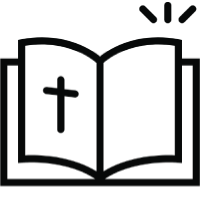

syme
syme

SYME
School of Youth Ministries in English
지성, 영성, 삶 전인격적 변화
SYME is....
-

Jesus in mind
하루 11시간 동안 영어로
36가지 신본주의 과목을 공부합니다. -
Jesus in my heart
36가지 성경적 주제를
신앙, 영성, 인격으로 연결합니다. -
Jesus in my life
배운 것을 바탕으로
삶에서 어떻게 살아가는지 훈련합니다.
-
지수연 학생은 어떻게 영어를 유창하게 할 수 있게 되었을까요??
안녕하세요 저는 Sueyeon Ji입니다.
제가 SYME를 시작하기 5달 전에저는 LCM 캠프를 참여했고
거기에서 SYME라는 멋진 장소를 알게 되었습니다.
제가 SYME가 가장 좋았던 점은 이곳에서 저의 부족한 영어를
연습할 수 있는 환경이었다는 점입니다.
여기에선 다른 사람들인 저의 발음, 문법에 대해
어떻게 생각하는지 걱정할 필요가 없었습니다. -
영어를 공부하는 가장 효과적인 방법은??
영어를 가장 효과적으로 배울 수 있는 방법은 영어가 생활화 되는 것입니다.
SYME는 화요일 오전부터 금요일 오후까지 기숙하며, 모든 수업과 대화를 영어로만 합니다.
(After Class 제외) 학생들은 영어로 진행되는 수업을 통해 성경을 이해할 수 있을 것입니다. -
돈, 결혼, 진화, 성, 데이팅… 어떻게 해야하지…?
인본주의 교육에 노출된 지금
이 세대 36가지의 완전히 성경적이며 신본주의 교육으로 무장하세요.
전인격적 변화를 이끌어내는 SYME의 7단계 배움 포인트로
신앙, 인격, 삶의 변화를 경험하세요. -
Study Abroad(SYME 를 통한 해외유학 기회)
SYME 프로그램을 통해 영어 실력을 향상 시킨 후 미국이나 캐나다로 유학을 갈 수 있는 길이 있습니다.
1학년 과정: 한국 제주 월비, 미국 뉴욕 월비, 플로리다 월비
2학년 과정: 미국 뉴욕 월비
3,4학년 과정: 뉴욕 월비와 연결된 대학교
(Liberty University, Cedarville University, Moody Bible Institute, Davis College, Calvary University, Clarks Summit University, CIU, 등)